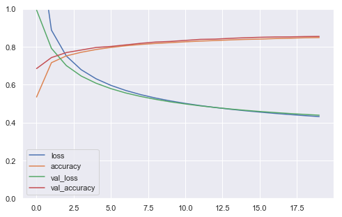
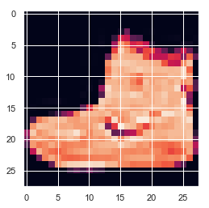

Neural Net : Feature Scaling
For classifying MNIST digits.
Load dependencies
#pip install tensorflow==2.0.0-beta0
#pip install --upgrade tensorflow==2.0.0-beta0
import tensorflow as tf
from tensorflow import keras # tf.keras
import seaborn as sns
import matplotlib as mpl
import matplotlib.pyplot as plt
import numpy as np
import os
import pandas as pd
import sklearn
import sys
import time
sns.set()
%matplotlib inline
%load_ext tensorboard
The tensorboard extension is already loaded. To reload it, use:
%reload_ext tensorboard
print("python", sys.version)
for module in mpl, np, pd, sklearn, tf, keras:
print(module.__name__, module.__version__)
python 3.7.1 (default, Dec 14 2018, 13:28:58)
[Clang 4.0.1 (tags/RELEASE_401/final)]
matplotlib 3.0.2
numpy 1.15.4
pandas 0.23.4
sklearn 0.20.1
tensorflow 2.0.0-beta0
tensorflow.python.keras.api._v2.keras 2.2.4-tf
Load data
fashion_mnist = keras.datasets.fashion_mnist
(X_train_full, y_train_full), (X_test, y_test) = (
fashion_mnist.load_data())
X_valid, X_train = X_train_full[:5000], X_train_full[5000:]
y_valid, y_train = y_train_full[:5000], y_train_full[5000:]
X_train.shape, y_train.shape
((55000, 28, 28), (55000,))
class_names = ["T-shirt/top", "Trouser", "Pullover", "Dress", "Coat",
"Sandal", "Shirt", "Sneaker", "Bag", "Ankle boot"]
#X_train[0]
n_rows = 5
n_cols = 10
plt.figure(figsize=(n_cols*1.4, n_rows * 1.6))
for row in range(n_rows):
for col in range(n_cols):
index = n_cols * row + col
plt.subplot(n_rows, n_cols, index + 1)
plt.imshow(X_train[index], cmap="binary", interpolation="nearest")
plt.axis('off')
plt.title(class_names[y_train[index]])
plt.show()
y_train[0:50]
array([4, 0, 7, 9, 9, 9, 4, 4, 3, 4, 0, 1, 8, 6, 3, 6, 4, 3, 2, 8, 7, 3,
4, 7, 1, 3, 4, 2, 0, 8, 5, 5, 9, 1, 5, 3, 5, 9, 0, 3, 9, 6, 4, 2,
9, 0, 8, 3, 3, 2], dtype=uint8)
class_names[y_train[0]]
'Coat'
Preprocess data : Feature Scaling
When using Gradient Descent, it is usually best to ensure that the features all have a similar scale, preferably with a Normal distribution. Try to standardize the pixel values and see if this improves the performance of your neural network.
Tips:
* For each feature (pixel intensity), you must subtract the mean() of that feature (across all instances, so use axis=0) and divide by its standard deviation (std(), again axis=0). Alternatively, you can use Scikit-Learn's StandardScaler.
* Make sure you compute the means and standard deviations on the training set, and use these statistics to scale the training set, the validation set and the test set (you should not fit the validation set or the test set, and computing the means and standard deviations counts as "fitting").
pixel_means = X_train.mean(axis = 0)
pixel_stds = X_train.std(axis = 0)
X_train_scaled = (X_train - pixel_means) / pixel_stds
X_valid_scaled = (X_valid - pixel_means) / pixel_stds
from sklearn.preprocessing import StandardScaler
scaler = StandardScaler()
X_train_scaled = scaler.fit_transform(X_train.astype(np.float32)\
.reshape(-1, 28 * 28)).reshape(-1, 28, 28)
X_valid_scaled = scaler.transform(X_valid.astype(np.float32)\
.reshape(-1, 28 * 28)).reshape(-1, 28, 28)
X_test_scaled = scaler.transform(X_test.astype(np.float32)\
.reshape(-1, 28 * 28)).reshape(-1, 28, 28)
Design neural network architecture
model
= keras.models.sequential([
keras.layer.layerType(parameters...),
keras.layer.layerType(parameters...),
keras.layer.layerType(parameters...),
keras.layer.layerType(parameters...)
])
model = keras.models.Sequential([
keras.layers.Flatten(input_shape=[28, 28]),
keras.layers.Dense(300, activation="relu"),
keras.layers.Dense(100, activation="relu"),
keras.layers.Dense(10, activation="softmax")
])
model.summary()
Model: "sequential_5"
_________________________________________________________________
Layer (type) Output Shape Param #
=================================================================
flatten_3 (Flatten) (None, 784) 0
_________________________________________________________________
dense_17 (Dense) (None, 300) 235500
_________________________________________________________________
dense_18 (Dense) (None, 100) 30100
_________________________________________________________________
dense_19 (Dense) (None, 10) 1010
=================================================================
Total params: 266,610
Trainable params: 266,610
Non-trainable params: 0
_________________________________________________________________
Configure model
model.compile(loss="sparse_categorical_crossentropy",
optimizer=keras.optimizers.SGD(1e-3),\
metrics=["accuracy"])
Train!
history = model.fit(X_train_scaled,\
y_train,\
batch_size=128,\
epochs=20,
validation_data=(X_valid_scaled, y_valid))
Train on 55000 samples, validate on 5000 samples
Epoch 1/20
55000/55000 [==============================] - 2s 32us/sample - loss: 1.4371 - accuracy: 0.5344 - val_loss: 0.9933 - val_accuracy: 0.6844
Epoch 2/20
55000/55000 [==============================] - 2s 29us/sample - loss: 0.8873 - accuracy: 0.7155 - val_loss: 0.7911 - val_accuracy: 0.7424
Epoch 3/20
55000/55000 [==============================] - 2s 29us/sample - loss: 0.7508 - accuracy: 0.7513 - val_loss: 0.7003 - val_accuracy: 0.7688
Epoch 4/20
55000/55000 [==============================] - 1s 27us/sample - loss: 0.6783 - accuracy: 0.7703 - val_loss: 0.6451 - val_accuracy: 0.7822
Epoch 5/20
55000/55000 [==============================] - 1s 27us/sample - loss: 0.6306 - accuracy: 0.7848 - val_loss: 0.6072 - val_accuracy: 0.7956
Epoch 6/20
55000/55000 [==============================] - 2s 27us/sample - loss: 0.5958 - accuracy: 0.7960 - val_loss: 0.5785 - val_accuracy: 0.8012
Epoch 7/20
55000/55000 [==============================] - 2s 28us/sample - loss: 0.5689 - accuracy: 0.8047 - val_loss: 0.5556 - val_accuracy: 0.8094
Epoch 8/20
55000/55000 [==============================] - 2s 28us/sample - loss: 0.5471 - accuracy: 0.8118 - val_loss: 0.5374 - val_accuracy: 0.8176
Epoch 9/20
55000/55000 [==============================] - 2s 28us/sample - loss: 0.5290 - accuracy: 0.8168 - val_loss: 0.5221 - val_accuracy: 0.8244
Epoch 10/20
55000/55000 [==============================] - 2s 29us/sample - loss: 0.5138 - accuracy: 0.8212 - val_loss: 0.5089 - val_accuracy: 0.8276
Epoch 11/20
55000/55000 [==============================] - 2s 32us/sample - loss: 0.5007 - accuracy: 0.8255 - val_loss: 0.4979 - val_accuracy: 0.8330
Epoch 12/20
55000/55000 [==============================] - 2s 30us/sample - loss: 0.4892 - accuracy: 0.8293 - val_loss: 0.4879 - val_accuracy: 0.8384
Epoch 13/20
55000/55000 [==============================] - 2s 30us/sample - loss: 0.4792 - accuracy: 0.8322 - val_loss: 0.4793 - val_accuracy: 0.8398
Epoch 14/20
55000/55000 [==============================] - 2s 30us/sample - loss: 0.4702 - accuracy: 0.8355 - val_loss: 0.4713 - val_accuracy: 0.8438
Epoch 15/20
55000/55000 [==============================] - 2s 29us/sample - loss: 0.4622 - accuracy: 0.8381 - val_loss: 0.4644 - val_accuracy: 0.8470
Epoch 16/20
55000/55000 [==============================] - 2s 29us/sample - loss: 0.4549 - accuracy: 0.8397 - val_loss: 0.4583 - val_accuracy: 0.8494
Epoch 17/20
55000/55000 [==============================] - 2s 30us/sample - loss: 0.4482 - accuracy: 0.8425 - val_loss: 0.4527 - val_accuracy: 0.8512
Epoch 18/20
55000/55000 [==============================] - 2s 29us/sample - loss: 0.4421 - accuracy: 0.8443 - val_loss: 0.4476 - val_accuracy: 0.8516
Epoch 19/20
55000/55000 [==============================] - 2s 29us/sample - loss: 0.4365 - accuracy: 0.8468 - val_loss: 0.4428 - val_accuracy: 0.8532
Epoch 20/20
55000/55000 [==============================] - 2s 28us/sample - loss: 0.4313 - accuracy: 0.8479 - val_loss: 0.4386 - val_accuracy: 0.8540
model.evaluate(X_test_scaled, y_test)
10000/10000 [==============================] - 0s 39us/sample - loss: 0.4680 - accuracy: 0.8349
[0.4679875907897949, 0.8349]
def plot_learning_curves(history):
pd.DataFrame(history.history).plot(figsize=(8, 5))
plt.grid(True)
plt.gca().set_ylim(0, 1)
plt.show()
plot_learning_curves(history)

Performing Inference
model.evaluate(X_test, y_test)
10000/10000 [==============================] - 0s 33us/sample - loss: 6.5878 - accuracy: 0.5762
[6.58776294708252, 0.5762]
X_valid.shape
(5000, 28, 28)
n_new = 10
X_new = X_test[:n_new]
y_proba = model.predict(X_new)
y_proba.round(2)
array([[0., 0., 0., 0., 0., 0., 0., 0., 0., 1.],
[0., 0., 1., 0., 0., 0., 0., 0., 0., 0.],
[0., 1., 0., 0., 0., 0., 0., 0., 0., 0.],
[0., 1., 0., 0., 0., 0., 0., 0., 0., 0.],
[0., 0., 1., 0., 0., 0., 0., 0., 0., 0.],
[0., 0., 0., 0., 1., 0., 0., 0., 0., 0.],
[0., 0., 0., 0., 1., 0., 0., 0., 0., 0.],
[0., 0., 0., 0., 1., 0., 0., 0., 0., 0.],
[0., 0., 0., 0., 0., 0., 0., 0., 1., 0.],
[0., 0., 0., 0., 0., 0., 0., 0., 1., 0.]], dtype=float32)
y_pred = model.predict_classes(X_new)
y_pred
array([9, 2, 1, 1, 2, 4, 4, 4, 8, 8])
for item in y_pred:
print(class_names[item])
Ankle boot
Pullover
Trouser
Trouser
Pullover
Coat
Coat
Coat
Bag
Bag
plt.imshow(valid_0.reshape(28,28))
<matplotlib.image.AxesImage at 0x1a38b67550>
